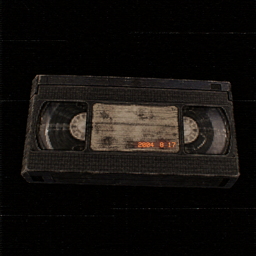

lost tape.● REC
lost tape. は、日本で活動するAI映像作家の個人プロジェクトです。2000年代のビデオカメラで撮ったような映像と、昔のゲームのようなローポリゴンの風景を、AIで作って短い動画として発表しています。
lost tape. is a personal project by an AI filmmaker in Japan. We make short videos that look like they were shot on a 2000s camcorder, and low-poly scenery inspired by old video games.
lost tape uploader について / About the uploader
▶ YouTube API Services を使用しています / Uses YouTube API Services
「lost tape uploader」は、私たちが自分で作った動画を、自分たちのYouTubeチャンネルに投稿するためだけに使う、非公開の小さな道具です。YouTube API Services を使って動画とタイトル・説明文をアップロードします。ほかの人が使うことはなく、ほかの人の情報を集めることもありません。
"lost tape uploader" is a small private tool that we use only to upload our own videos to our own YouTube channel. It uses YouTube API Services to upload the video file, title and description. It is not offered to anyone else and does not collect data about other people.
使用にあたっては YouTube利用規約 と Googleプライバシーポリシー が適用されます。
Use of the uploader is subject to the YouTube Terms of Service and the Google Privacy Policy.